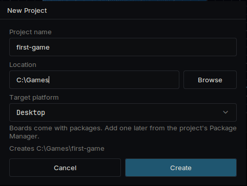
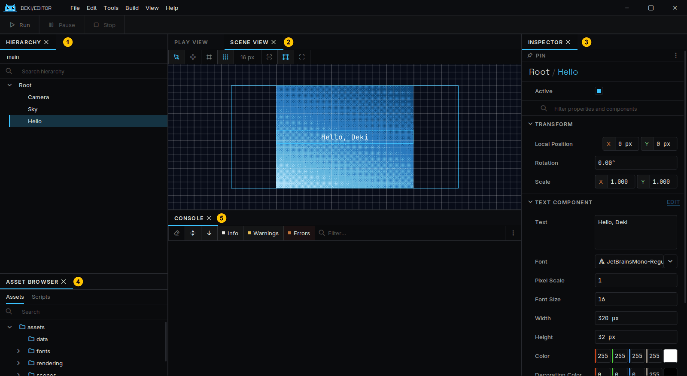
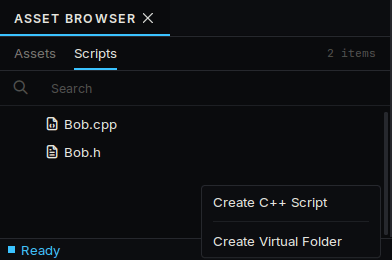
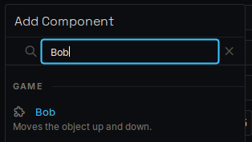
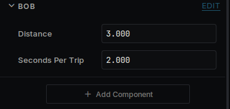
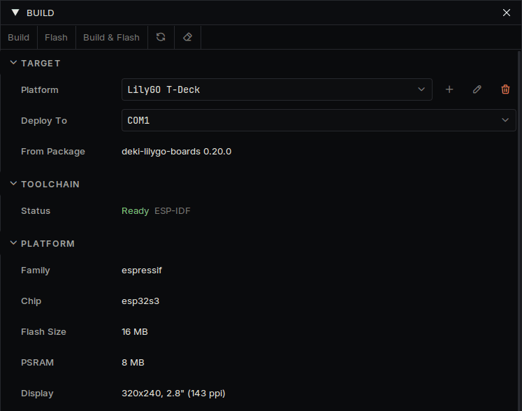

로딩중...
검색중...
일치하는것 없음
시작하기
에디터를 내려받는 것부터 내 코드를 디바이스에서 실행하는 것까지 안내합니다.
에디터 설치
최신 릴리스에서 사용하는 컴퓨터에 맞는 압축 파일을 내려받아 원하는 곳에 풀고 DekiEditor를 실행합니다. 컴파일러가 압축 파일에 들어 있으므로 따로 설치할 것은 없습니다.
프로젝트 만들기
파일 → 새 프로젝트... 를 선택하고 프로젝트 이름과 위치를 정합니다. 대상 플랫폼은 Desktop으로 둡니다. 디바이스는 나중에 추가할 수 있으며, 같은 프로젝트가 양쪽에서 실행됩니다.

새 프로젝트 대화 상자
프로젝트를 처음 열면 에디터가 패키지를 내려받아 빌드합니다. 몇 분 정도 걸립니다. 그다음부터는 몇 초면 열립니다.
새 프로젝트에는 오브젝트 세 개가 있는 씬이 하나 있습니다. Camera, 그라데이션 Sky, 텍스트 Hello 입니다.
둘러보기

패널에 번호를 붙인 에디터
| 패널 | 용도 | |
|---|---|---|
| 1 | 하이어라키 | 씬에 있는 오브젝트 |
| 2 | 씬 뷰 | 오브젝트의 위치. 여기서 드래그할 수 있습니다 |
| 3 | 인스펙터 | 선택한 오브젝트의 컴포넌트와 그 값 |
| 4 | 에셋 브라우저 | 내 파일. 코드는 스크립트 탭에 있습니다 |
| 5 | 콘솔 | 엔진과 내 코드에서 나온 메시지 |
오브젝트는 씬 안의 한 위치입니다. 무엇을 하는지는 컴포넌트가 정하며, 인스펙터에 보이는 것은 모두 컴포넌트입니다.
바꿔 보기

인스펙터의 텍스트 필드
- 하이어라키에서 Hello 를 선택합니다.
- 인스펙터에서 텍스트 를 다른 내용으로 바꿉니다.
- 창 왼쪽 위의 플레이 를 누르거나 Ctrl+P를 누릅니다.
- 정지 를 누르고 Ctrl+S로 씬을 저장합니다.
게임이 실행되는 동안 바꾼 내용은 멈추면 사라집니다. 실행 중에는 인스펙터에 안내가 표시됩니다.
거리 단위는 미터입니다. 카메라는 화면 크기와 상관없이 위에서 아래까지 15미터를 보여 줍니다. Units와 Screens를 참고하세요.
컴포넌트 작성하기
에셋 브라우저에서 스크립트 를 열고 마우스 오른쪽 버튼을 눌러 C++ 스크립트 생성 을 선택합니다. 이름은 Bob으로 합니다. 에디터가 src/Bob.h와 src/Bob.cpp를 만듭니다. 아무 텍스트 편집기로 열어 내용을 바꿉니다.

스크립트 탭의 C++ 스크립트 생성
src/Bob.h:
#pragma once
#include <deki/Engine.h>
DEKI_CATEGORY("Game")
DEKI_DESCRIPTION("Moves the object up and down.")
class Bob : public Deki::Component
{
public:
// DEKI_EXPORT shows a field in the Inspector and saves it in the scene.
DEKI_EXPORT
float distance = 3.0f;
DEKI_EXPORT
float secondsPerTrip = 2.0f;
void Start() override;
void Update() override;
private:
float m_StartY = 0.0f;
float m_Elapsed = 0.0f;
};
src/Bob.cpp:
#include "Bob.h"
#include <cmath>
void Bob::Start()
{
m_StartY = GetOwner()->GetWorldY();
}
void Bob::Update()
{
// The time since the last frame is in milliseconds.
m_Elapsed += Deki::Time::GetDeltaTimeF() * 0.001f;
const float y = m_StartY + std::sin(m_Elapsed * 6.2831853f / secondsPerTrip) * distance;
GetOwner()->SetWorldPosition(GetOwner()->GetWorldX(), y);
}
두 파일을 저장하고 에디터로 돌아옵니다. 에디터가 변경을 감지해 코드를 다시 빌드합니다. 진행 상황과 컴파일 오류는 활동 패널에 표시됩니다.
Hello 를 선택하고 컴포넌트 추가 를 눌러 Bob 을 고릅니다. 필드 두 개가 인스펙터에 나타납니다. 플레이 를 누르면 텍스트가 위아래로 움직입니다. 필드나 코드를 바꿔서 다시 해 보세요.

컴포넌트 추가 목록의 Bob

인스펙터에 표시된 Bob의 필드

게임 실행 중 위아래로 움직이는 텍스트
Awake, Start, Update는 컴포넌트가 받을 수 있는 호출입니다. 필요한 것만 선언합니다.
디바이스에서 실행하기
- 보기 → 패키지 관리자 를 열고 디바이스 패키지를 설치합니다. 디바이스 에 지원 디바이스별 페이지가 있으며 패키지 이름이 나와 있습니다.
- 빌드 → 빌드 패널 을 열고 플랫폼 목록에서 디바이스를 선택합니다. 디바이스의 부트 씬과 설정이 프로젝트의 platforms/ 폴더로 복사되며, 자유롭게 바꿀 수 있습니다.
- 패널의 툴체인 항목에 디바이스용 컴파일러가 설치되어 있는지 표시됩니다. 설치되지 않음 이라면 빌드 → 플랫폼 관리자... 를 열고 툴체인 에서 설치합니다. 용량이 크지만 한 번만 받으면 됩니다.
- 디바이스를 연결하고 배포 대상 에서 고른 뒤 빌드 후 플래시 를 누릅니다. SD 카드에서 불러오는 휴대기는 빌드 후 설치 입니다.

패키지 관리자의 디바이스 패키지

디바이스를 선택한 빌드 패널
디바이스의 첫 빌드는 몇 분 걸립니다. 만든 씬은 수정 없이 디바이스에서 실행됩니다. Deki가 아직 지원하지 않는 디바이스라면 Platforms를 참고하세요.
브라우저에서 플레이할 수도 있습니다. 플랫폼 목록에서 Web을 고르고 Build & Open in Browser를 누르면, 게임이 웹 페이지로 빌드되어 브라우저에서 열립니다. 처음 한 번은 패널이 웹용 컴파일러 Emscripten(약 2GB)을 설치합니다. 같은 프로젝트라서 기기에서 돌아가는 것이 그대로 돌아가고, 페이지 파일은 어느 웹사이트에나 올릴 수 있습니다.
다음 단계
- Project layout: 프로젝트 폴더의 구성
- Sprite System과 Font System: 이미지와 텍스트
- UI widgets: 버튼, 슬라이더, 목록
- Making it fast와 Memory: 디바이스의 속도나 메모리가 부족할 때
- 첫 페이지의 패키지 목록: 사운드, 타일맵, 물리, 무선, 센서